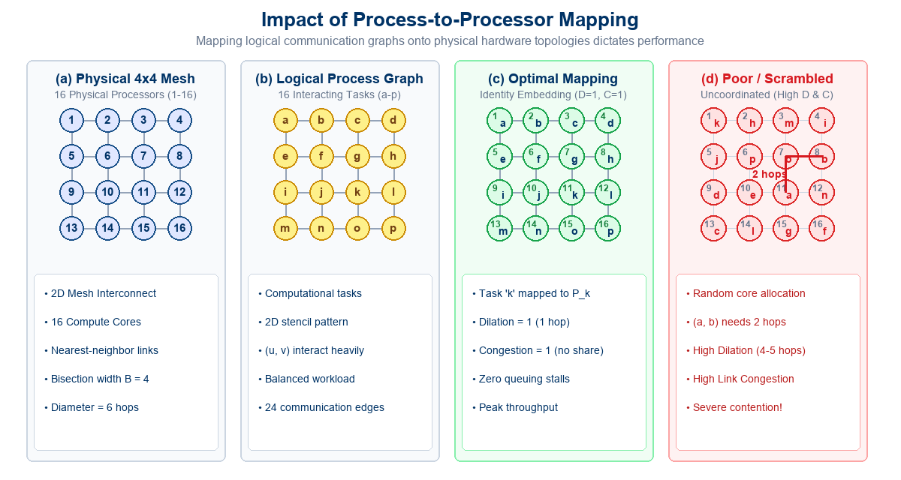
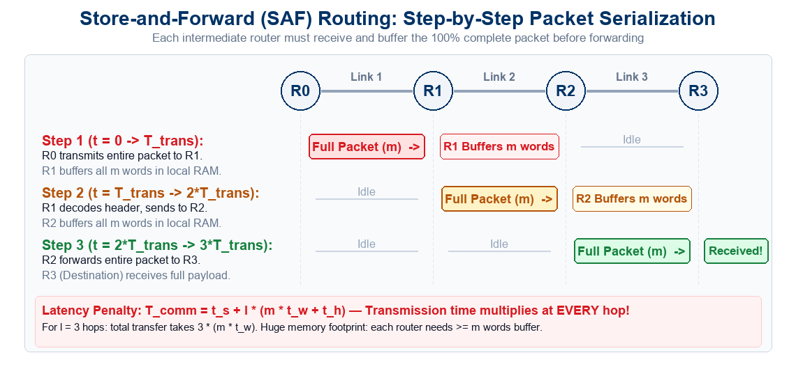
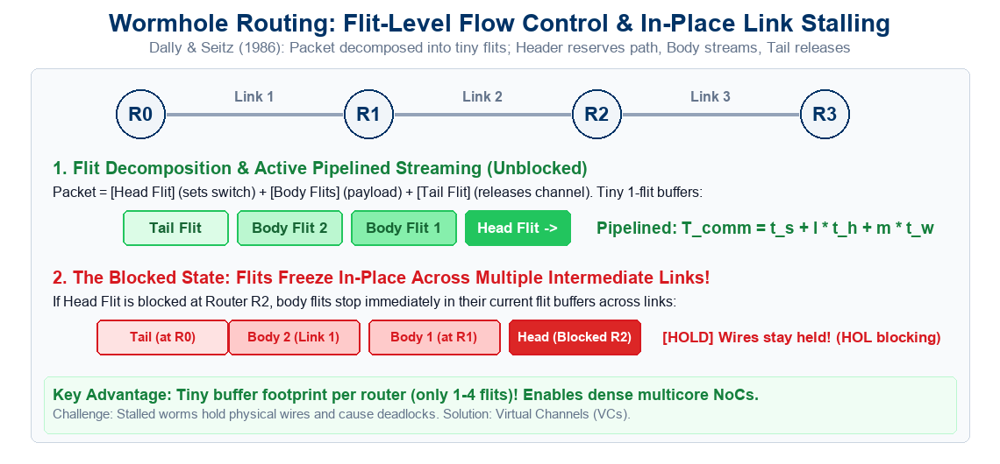
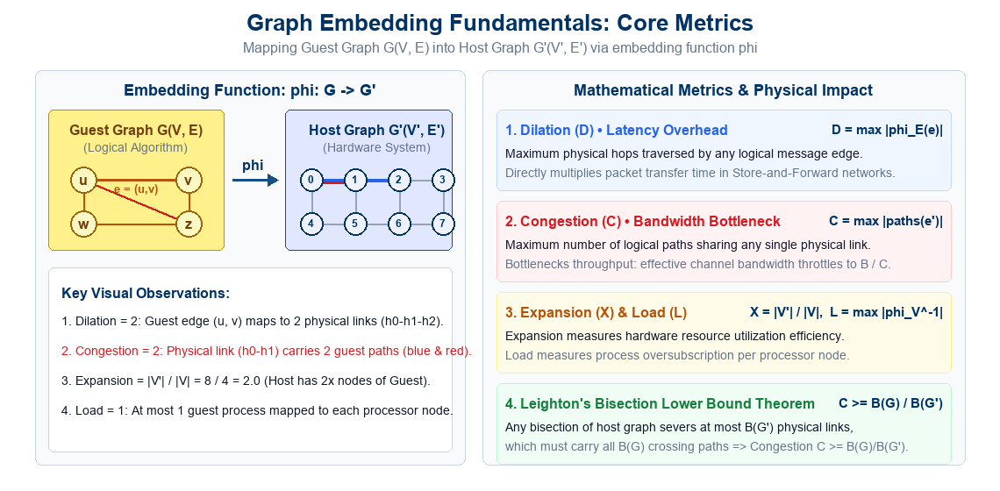
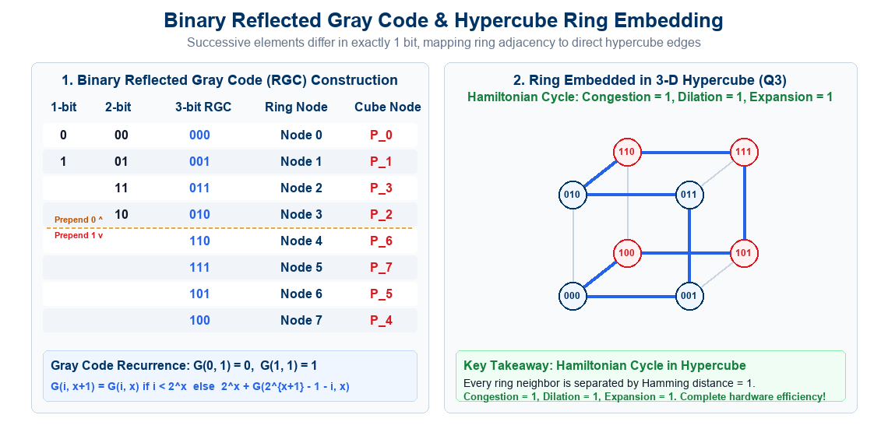
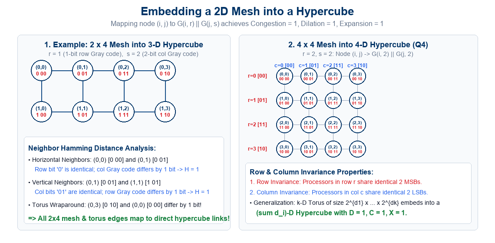
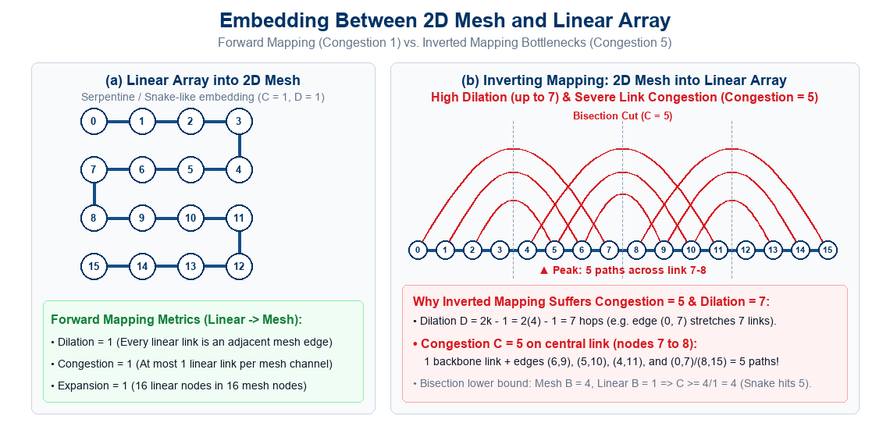
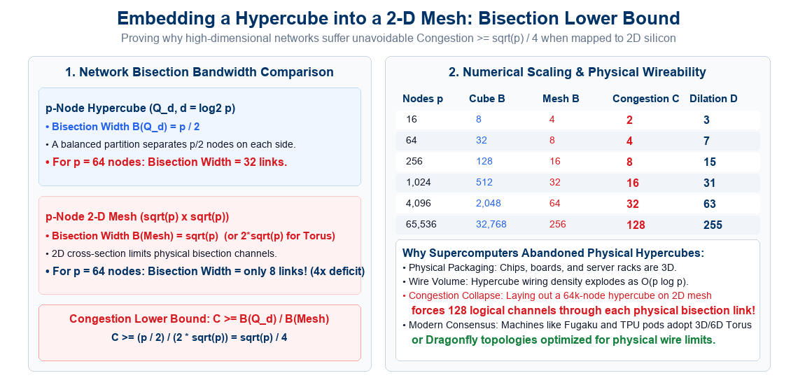

Process-to-Processor Mapping & Graph Embedding
Lecture Outline
- The Process Mapping Challenge:
- The gap between algorithmic patterns and hardware topologies.
- Impact on Clusters, MPPs, NUMA, and Networks-on-Chip.
- Impact of Process Mapping (Case Study):
- Mapping a \(4 \times 4\) process grid onto a \(4 \times 4\) processor mesh.
- Identity mapping vs. Arbitrary / Scrambled allocation.
- Routing mechanisms: Store-and-Forward, Cut-Through & Wormhole.
- Latency degradation: Distance vs. Link Congestion.
- Graph Embedding Formalism & Core Metrics:
- Guest Graph \(G(V, E)\) vs. Host Graph \(G'(V', E')\).
- Dilation (\(D\)), Congestion (\(C\)), Expansion (\(X\)), and Load (\(L\)).
- Leighton’s Bisection Theorem: \(C \ge B(G) / B(G')\).
- Embedding a Linear Array / Ring into a Hypercube:
- Binary Reflected Gray Code (RGC): Recurrence & \(i \oplus (i \gg 1)\).
- Hamiltonian cycle proof: Congestion = 1, Dilation = 1, Expansion = 1.
- Embedding Meshes into Hypercubes:
- Gray code concatenation: \(\phi(i, j) = G(i, r) \mathbin{\Vert} G(j, s)\).
- Row & column invariance properties; \(2 \times 4\) and \(4 \times 4\) case studies.
- Generalization to \(k\)-dimensional tori.
- Embedding Between 2D Meshes and Linear Arrays:
- Forward: Linear Array to 2D Mesh via serpentine snake (\(D=1, C=1\)).
- Inverse: 2D Mesh to Linear Array (\(D = 2k-1 = 7\)).
- The Congestion = 5 phenomenon: Overlapping intervals & cuts.
- Architectural Extension: Hypercube into 2D Mesh:
- Bisection mismatch (\(p/2\) vs. \(2\sqrt{p}\)) and bound \(C \ge \sqrt{p}/4\).
- VLSI Rent’s rule and why supercomputers moved to 3D tori.
- Interactive Review Quizzes (Quizzes 1 & 2):
- Quiz-1 (Topology Mapping & Graph Embedding - Lec 14): 4 conceptual MCQs + answer keys.
- Quiz-2 (Brent’s Theorem & Parallel Merge - Lec 13 Review): 4 conceptual MCQs + answer keys.
The Process-to-Processor Mapping Problem
When designing parallel algorithms, programmers conceptualize tasks and communication as an idealized logical communication graph:
The Logical Domain (Algorithm)
- An algorithm consists of concurrent tasks/processes \(\{p_0, p_1, \dots\}\).
- Inter-task interactions define logical communication edges:
- Nearest-neighbor grid stencils (PDEs, climate models).
- Pipelined 1D arrays (systolic filters, stream processing).
- Tree-structured reductions and prefix trees.
- Multidimensional FFT hypercube exchange patterns.
- Designed assuming direct, zero-delay communication between interacting tasks.
The Physical Domain (Hardware)
- Physical supercomputers and multi-core chips have a fixed interconnection topology:
- 2D/3D Meshes and Tori (Intel Knights Landing, Google TPU pods).
- Multistage Interconnection Networks (Omega, Clos, Fat-Trees).
- Dragonfly networks (Cray XC50, HPE Slingshot).
- Hypercubes (early SGI, CM-2, nCUBE).
- Physical links have finite bandwidth (\(t_w\)), fixed router hops (\(t_h\)), and finite buffer queues.
Fundamental Objective: How do we assign logical processes to physical processors such that communication latency, link contention, and hardware idle time are simultaneously minimized?
Impact of Process Mapping: A Concrete Scenario
Consider a parallel application with 16 interacting processes structured as a \(4 \times 4\) grid, executing on a physical \(4 \times 4\) 2D mesh of 16 processing nodes:
Topology-Preserving (Identity) Mapping
- Process \(a\) is assigned to Node 1, \(b\) to Node 2, …, \(p\) to Node 16.
- Direct Link Traversal:
- Every pair of communicating processes resides on physically adjacent nodes.
- Path length is exactly 1 physical hop.
- Zero Channel Contention:
- Each physical wire carries traffic from at most 1 logical communication pair.
- Routers perform zero multi-hop store-and-forward switching.
- Network throughput reaches hardware peak!
Arbitrary / Scrambled Mapping
- The operating system scheduler or user allocates processes randomly (e.g., \(a \to 11\), \(b \to 8\)).
- Multi-Hop Path Latency:
- Interacting processes are separated by 2, 3, or even 5 physical hops!
- Packets traverse multiple intermediate routers.
- Severe Link Contention & Hotspots:
- Multiple logical messages compete for the same physical links simultaneously.
- Router buffers overflow, triggering head-of-line blocking and catastrophic throughput collapse.
Key Insight: On distributed-memory platforms and large-scale NoCs, poor process mapping can degrade overall application performance by an order of magnitude (\(5\times\) to \(10\times\)), even when computational load is perfectly balanced!
Visualizing the Impact of Process Mapping

Impact of Process Mapping: (a) Physical 4x4 processor mesh; (b) Logical 4x4 process communication graph; (c) Optimal identity mapping where all communication stays on 1-hop links; (d) Scrambled mapping causing multi-hop routing and severe link contention
Routing Mechanism 1: Store-and-Forward (SAF)
The traditional packet-switched routing baseline used in conventional computer networks:
Operational Principles
- Hop-by-Hop Buffering:
- An intermediate router must completely receive and buffer the entire packet of size \(m\) words before decoding the header.
- Forwarding to the next node only starts after the last bit of the packet has been validated.
- Buffer Requirements:
- Requires large memory capacity at every input port to hold at least one full packet (\(m\) words).
Latency Model & Bottleneck
- Communication Latency: \[T_{\text{comm}} = t_s + l \cdot (m \cdot t_w + t_h)\]
- The Distance Multiplier:
- Transmission time \(m \cdot t_w\) is incurred independently at every single hop!
- For \(l\) hops, transmission latency scales additively as \(l \cdot m \cdot t_w\).
- Architectural Bottleneck:
- In large supercomputers with high diameter, SAF makes multi-hop communication prohibitively slow!
Visualizing Store-and-Forward (SAF) Routing

Store-and-Forward (SAF) Routing: Each intermediate router must receive and buffer the entire packet before forwarding to the next link
Routing Mechanism 2: Virtual Cut-Through (VCT)
Proposed by Kermani & Kleinrock (1979) to eliminate the hop-by-hop packet serialization bottleneck:
Operational Principles
- Immediate Cut-Through:
- As soon as the packet header arrives at a router and the outgoing link is free, the router immediately forwards flits.
- Flits stream concurrently across successive physical links in a pipeline without waiting for the full packet to arrive.
- Pipelined Latency (Uncongested): \[T_{\text{comm}} = t_s + l \cdot t_h + m \cdot t_w\]
- Hop distance \(l\) only multiplies the small router delay \(t_h\)!
- Payload transmission \(m \cdot t_w\) is paid only once.
The Blocking Catch
- Full Packet Absorption:
- If the outgoing channel is busy or blocked, the router buffers the entire packet locally in queue memory.
- Once buffered, downstream links are freed, preventing physical wire holding.
- Buffer Scalability Limit:
- Still requires full-packet buffers (\(m\) words) per port!
- High memory footprint limits scalability in dense on-chip network routers (NoCs).
Visualizing Virtual Cut-Through (VCT) Routing
Virtual Cut-Through (VCT) Routing: Flits stream immediately across open links, but the full packet is buffered if the downstream link is blocked
Routing Mechanism 3: Wormhole Routing
Introduced by Dally & Seitz (1986), the dominant routing mechanism in modern supercomputers and on-chip NoCs:
Flit-Level Flow Control
- Packets Divided into Tiny Flits:
- Header Flit: Allocates router paths and registers switch state.
- Body Flits: Carry payload; stream through established paths.
- Tail Flit: Closes the connection and releases link channels.
- Minimal Buffer Footprint:
- Routers only buffer 1 to 4 flits (a few words) per port!
- Enables compact, ultra-fast on-chip router silicon.
In-Place Stalling & Contention
- The “Frozen Worm”:
- If the header flit is blocked at a downstream router, body flits stop in place across links, holding physical wires!
- Causes head-of-line blocking across multiple physical links.
- Virtual Channels (VCs):
- Multiplex multiple logical FIFO queues over a single physical wire.
- Allows other flits to bypass stalled worms and eliminates deadlocks!
Visualizing Wormhole Routing: Pipelined Streaming & Stalls

Wormhole Routing: Packet streams as a train of flits; stalled worms freeze in-place across links, holding physical wires
Routing Comparison: SAF vs. Cut-Through vs. Wormhole
A side-by-side architectural comparison of the three primary message-passing routing paradigms:
| Feature / Metric | Store-and-Forward (SAF) | Virtual Cut-Through (VCT) | Wormhole Routing (WHR) |
|---|---|---|---|
| Switching Unit | Full Packet | Full Packet (flit-streamed) | Flit (Flow Control Digit) |
| Buffer per Port | Large: \(\ge 1\) Packet (\(m\) words) | Large: \(\ge 1\) Packet (\(m\) words) | Tiny: \(1 \dots 4\) Flits (words) |
| Uncongested Latency | \(t_s + l \cdot (m \cdot t_w + t_h)\) | \(t_s + l \cdot t_h + m \cdot t_w\) | \(t_s + l \cdot t_h + m \cdot t_w\) |
| Hop Distance Impact | Severe: Multiplies \(m \cdot t_w\) | Minimal: Adds small \(l \cdot t_h\) | Minimal: Adds small \(l \cdot t_h\) |
| When Blocked | Waits at upstream router | Absorbed into local buffer | Stalls in-flight across links |
| Link Contention | Minimal wire holding | Minimal wire holding | High (requires Virtual Channels) |
| Hardware Silicon Cost | High memory cost | High memory cost | Extremely Low & Compact |
| Primary Deployment | WANs, Classical Ethernet | High-speed InfiniBand switches | On-Chip NoCs, Supercomputers, GPUs |
Direct Link to Process Mapping: Because modern machines use Wormhole routing, communication time is insensitive to distance in quiet networks, but extremely vulnerable to link congestion (\(C\)) when multiple worms compete for the same physical links!
Mathematical Impact on Communication Latency
Having examined how packets and flits propagate through routers, let us quantitatively analyze communication time (\(T_{\text{comm}}\)):
1. Store-and-Forward Routing
- A message of size \(m\) words traverses \(l\) physical hops: \[T_{\text{comm}} = t_s + l \cdot (m \cdot t_w + t_h)\]
- In this model, packet transmission time multiplies directly with hop count \(l\):
- Optimal mapping (\(l = 1\)): \[T_{\text{opt}} = t_s + m \cdot t_w + t_h\]
- Scrambled mapping (\(l = 4\)): \[T_{\text{bad}} \approx t_s + 4 \cdot (m \cdot t_w + t_h) \approx 4 \times T_{\text{opt}}\]
- Hop distance directly throttles message delivery.
2. Cut-Through & Wormhole Routing
- Flits are pipelined across the network: \[T_{\text{comm}} = t_s + l \cdot t_h + m \cdot t_w\]
- While pipelining masks distance for large \(m\) in an uncongested network, poor mapping creates link congestion (\(C\)):
- If \(C\) messages share a link of bandwidth \(B = 1/t_w\), the effective bandwidth drops to \(B / C\).
- The actual transmission time inflates to: \[T_{\text{comm}} \approx t_s + l \cdot t_h + C \cdot (m \cdot t_w)\]
- High congestion causes buffer queue stalls (\(t_{\text{wait}} \gg t_s\)).
Takeaway: Minimizing hop distance (Dilation) reduces per-message latency, while minimizing physical link sharing (Congestion) prevents link serialization and buffer saturation!
Mapping Techniques for Graphs: Motivation
Why do we study formal graph mapping in parallel algorithm design?
The Core Objectives of Graph Embedding:
1. Algorithm Portability: We often have an efficient parallel algorithm designed for an idealized architecture (e.g., a hypercube or ring), but must run it on a distinct physical topology (e.g., a 2D mesh, torus, or fat-tree).
2. Communication Pattern Realization: Many numerical algorithms exhibit fixed regular communication patterns (e.g., nearest-neighbor grid exchanges in PDEs). Embedding maps this pattern onto hardware.
3. Predicting Performance Degradation: Graph embedding theory provides strict mathematical bounds on how much slower an algorithm will run when ported across topologies!
Classic Design Examples
- Running a 2D mesh stencil algorithm on a hypercube supercomputer.
- Running a hypercube-based bitonic sort or FFT on a 2D mesh processor.
- Running a 1D systolic pipeline on a multi-dimensional torus.
Modern Relevance
- NUMA & Socket Affinity: Pinning MPI processes or OpenMP threads to specific NUMA domains to maximize cache sharing.
- NoC Routing: Mapping deep learning tensor cores on a wafer-scale engine (Cerebras) or GPU chiplet NoC.
Formal Graph Embedding Formulation
Formally, graph embedding models the mapping of an algorithmic communication structure onto an architectural interconnection network:
Definition (Graph Embedding): Let \(G(V, E)\) be the Guest Graph (representing the algorithm’s tasks and logical communication edges), and let \(G'(V', E')\) be the Host Graph (representing physical processors and physical communication links). An embedding of \(G\) into \(G'\) is a pair of functions \(\phi = (\phi_V, \phi_E)\): \[\phi_V: V \to V' \quad \text{(Vertex Mapping)}\] \[\phi_E: E \to \mathcal{P}(G') \quad \text{(Edge Routing)}\] where \(\mathcal{P}(G')\) is the set of all simple paths in \(G'\). For every edge \(e = (u, v) \in E\), the path \(\phi_E(e)\) in \(G'\) connects host vertex \(\phi_V(u)\) to host vertex \(\phi_V(v)\).
The Guest Graph \(G(V, E)\)
- \(V\): Set of concurrent processes or computational tasks (\(|V|\) processes).
- \(E\): Set of logical communication dependencies. An edge \((u, v) \in E\) indicates that process \(u\) must send messages to process \(v\).
The Host Graph \(G'(V', E')\)
- \(V'\): Set of physical processors or nodes (\(|V'|\) cores/processors).
- \(E'\): Set of physical point-to-point bidirectional interconnect wires or channels.
Fundamental Embedding Metrics: Congestion, Dilation, Expansion
To evaluate the quality and performance degradation of an embedding \(\phi: G \to G'\), we measure three fundamental metrics:
1. Congestion (\(C\))
\[C = \max_{e' \in E'} \left| \{ e \in E \mid e' \in \phi_E(e) \} \right|\] Definition: Maximum number of logical edges in \(E\) whose routed paths traverse any single physical edge \(e' \in E'\).
Physical Impact: Limits network throughput. If \(C\) paths share an edge, available bandwidth per flow drops to \(1/C\), causing router queueing and serialization bottlenecks.
2. Dilation (\(D\))
\[D = \max_{e \in E} \left| \phi_E(e) \right|\] Definition: Maximum length (number of physical hops) in \(G'\) that any single logical edge in \(E\) is mapped onto.
Physical Impact: Directly determines communication latency. In store-and-forward networks, latency scales as \(D \times t_w\). In wormhole networks, router hop delay adds \((D - 1) \times t_h\).
3. Expansion (\(X\))
\[X = \frac{|V'|}{|V|}\] Definition: Ratio of host nodes in \(G'\) to guest nodes in \(G\).
Physical Impact: Measures hardware resource efficiency. \(X = 1\) is a 1-to-1 bijection. If \(X > 1\), \(|V'| - |V|\) physical processors sit unutilized (overprovisioning).
Processor Load (\(L\)): When \(|V| > |V'|\) (oversubscription), the load is the maximum number of guest tasks mapped to any single host processor: \(L = \max_{v' \in V'} |\phi_V^{-1}(v')|\). Ideal load balancing requires \(L = \lceil |V| / |V'| \rceil\).
Visualizing Graph Embedding Metrics

Visualizing Graph Embedding Metrics: Guest Graph G mapped into Host Graph G’ via phi, illustrating Dilation = 2 (guest edge traversing 2 hops), Congestion = 2 (host link carrying 2 paths), Expansion = 2.0, and Leighton’s Bisection Lower Bound
Embedding a Linear Array into a Hypercube
A fundamental problem in parallel computing is mapping a 1D linear array or ring onto a hypercube:
Algorithmic Motivation
- Many numerical and signal-processing pipelines are naturally 1-dimensional:
- 1D finite-difference stencil updates (\(u_i^{t+1} = f(u_{i-1}^t, u_i^t, u_{i+1}^t)\)).
- Pipelined matrix-vector multiplications.
- Systolic arrays and linear prefix scans.
- Question: How can an \(N = 2^d\) node ring be mapped onto a \(d\)-dimensional hypercube (\(Q_d\))?
The Hypercube Topology (\(Q_d\))
- A \(d\)-dimensional hypercube has \(2^d\) nodes.
- Each node is addressed by a \(d\)-bit binary string \((b_{d-1} b_{d-2} \dots b_0)\).
- Physical Link Rule: An edge exists between node \(u\) and node \(v\) if and only if their binary representations differ in exactly one bit position: \[\text{Hamming Distance } H(u, v) = 1\]
- Total nodes: \(2^d\), Node degree: \(d\), Diameter: \(d\).
The Embedding Challenge: To achieve Dilation = 1 and Congestion = 1, we must find a sequence of \(2^d\) binary addresses such that consecutive addresses (including wraparound from last to first) differ in exactly one bit!
Binary Reflected Gray Code (RGC)
The mathematical tool that achieves an optimal ring-to-hypercube embedding is the Binary Reflected Gray Code (RGC):
Formal Recursive Definition: Let \(G(i, x)\) denote the \(i\)-th codeword in an \(x\)-bit Binary Reflected Gray Code (\(0 \le i < 2^x\)). The function \(G(i, x)\) is defined inductively as: \[G(0, 1) = 0, \quad G(1, 1) = 1\] \[G(i, x+1) = \begin{cases} G(i, x), & \text{if } 0 \le i < 2^x \\ 2^x + G(2^{x+1} - 1 - i, x), & \text{if } 2^x \le i < 2^{x+1} \end{cases}\]
Why is it Called “Reflected”?
- The lower half of the sequence (\(i \ge 2^x\)) is formed by taking the upper half (\(i < 2^x\)), reflecting it backwards (mirror image), and adding \(2^x\) (setting the most significant bit to
1). - The reflection ensures that the boundary between the two halves (\(i = 2^x - 1\) and \(i = 2^x\)) differs only in the MSB!
Closed-Form Bitwise Conversion
- An integer \(i\) can be converted directly to its Gray code in \(O(1)\) CPU operations: \[\boxed{\text{Gray}(i) = i \oplus \lfloor i / 2 \rfloor = i \oplus (i \gg 1)}\]
- The inverse operation (Gray to binary) is computed via cumulative XOR parity: \[b_k = \bigoplus_{j=k}^{d-1} g_j\]
Step-by-Step Construction of Gray Codes
Let us construct the 1-bit, 2-bit, and 3-bit Reflected Gray Codes systematically:
Recursive Reflection Steps
- 1-bit Gray Code (\(x = 1\)): \[\mathcal{G}_1 = [0, 1]\]
- 2-bit Gray Code (\(x = 2\)):
- Reflect \(\mathcal{G}_1\): \([1, 0]\)
- Prepend
0to original: \([00, 01]\) - Prepend
1to reflected: \([11, 10]\) \[\mathcal{G}_2 = [00, 01, 11, 10]\]
- 3-bit Gray Code (\(x = 3\)):
- Reflect \(\mathcal{G}_2\): \([10, 11, 01, 00]\)
- Prepend
0to original: \([000, 001, 011, 010]\) - Prepend
1to reflected: \([110, 111, 101, 100]\) \[\mathcal{G}_3 = [000, 001, 011, 010, 110, 111, 101, 100]\]
Codeword & Hypercube Node Table
| Ring Node \(i\) | Binary Index | 3-bit RGC \(G(i, 3)\) | Hypercube Node |
|---|---|---|---|
| 0 | 000 |
000 |
Processor 0 |
| 1 | 001 |
001 |
Processor 1 |
| 2 | 010 |
011 |
Processor 3 |
| 3 | 011 |
010 |
Processor 2 |
| 4 | 100 |
110 |
Processor 6 |
| 5 | 101 |
111 |
Processor 7 |
| 6 | 110 |
101 |
Processor 5 |
| 7 | 111 |
100 |
Processor 4 |
Notice: Adjacent entries differ in exactly 1 bit. Furthermore, Node 7 (100) and Node 0 (000) differ in exactly 1 bit (the MSB), closing the ring into a Hamiltonian cycle!
Gray Code Ring Embedding: Hamiltonian Cycle

Embedding a Linear Array / Ring into a 3D Hypercube: Recursive Gray code construction (left) and the resulting directed Hamiltonian Cycle in the 3-D hypercube (right)
Proof of Optimality for Ring-to-Hypercube Embedding
Why are all three embedding metrics strictly equal to 1?
Optimality Theorem:
Mapping node \(i\) of a \(2^d\)-node ring to node \(G(i, d)\) of a \(d\)-dimensional hypercube yields: \[\boxed{\text{Congestion} = 1, \quad \text{Dilation} = 1, \quad \text{Expansion} = 1}\]
1. Dilation = 1 Proof
- For any edge \((i, i+1)\) in the linear array:
- By definition of RGC, \(G(i, d)\) and \(G(i+1, d)\) differ in exactly one bit position.
- In a hypercube, any two nodes differing by 1 bit share a direct physical edge.
- Path length is exactly \(|\phi_E(i, i+1)| = 1\) hop.
- For the ring wraparound edge \((2^d - 1, 0)\):
- \(G(2^d - 1, d) = 100\dots0_2\) and \(G(0, d) = 000\dots0_2\).
- They differ only in bit position \(d-1\) (MSB).
- Hence, \(|\phi_E(2^d - 1, 0)| = 1\) hop \(\implies \mathbf{D = 1}\).
2. Congestion = 1 & Expansion = 1 Proof
- Congestion = 1:
- The ring has \(2^d\) edges.
- The hypercube has \(d \cdot 2^{d-1}\) edges.
- The \(2^d\) ring edges map to \(2^d\) distinct hypercube edges that form a simple closed loop (a Hamiltonian Cycle).
- No physical edge carries more than one logical ring edge \(\implies \mathbf{C = 1}\).
- Expansion = 1:
- The host has \(|V'| = 2^d\) processors and the guest has \(|V| = 2^d\) tasks:
- \(\text{Expansion} = |V'| / |V| = 2^d / 2^d = \mathbf{1}\).
Embedding a Mesh into a Hypercube
Can we extend this technique to embed multi-dimensional grids into hypercubes? Yes!
Algorithmic Motivation
- 2D grid computations are ubiquitous in science and engineering:
- Partial Differential Equation (PDE) solvers (Navier-Stokes, Laplace, Poisson).
- Image processing and convolutional operators.
- Cellular automata (Conway’s Game of Life, Ising model).
- A 2D wraparound mesh (2D Torus) of size \(2^r \times 2^s\) contains \(2^{r+s}\) processing elements.
- Question: How can we embed this \(2^r \times 2^s\) torus into a \(d\)-dimensional hypercube where \(d = r + s\)?
The Cartesian Product Principle
- A fundamental algebraic property of hypercubes is that a high-dimensional hypercube is the Cartesian graph product of lower-dimensional hypercubes: \[Q_{r+s} = Q_r \times Q_s\]
- A node in \(Q_{r+s}\) can be addressed by splitting its \((r+s)\)-bit label into an \(r\)-bit prefix and an \(s\)-bit suffix: \[\text{Address} = \text{Prefix}_r \mathbin{\Vert} \text{Suffix}_s\]
- We can embed a 1D ring along the rows using \(Q_r\) and another 1D ring along the columns using \(Q_s\)!
Mapping Function: Map node \((i, j)\) of the \(2^r \times 2^s\) mesh onto node \(\mathbf{G(i, r) \mathbin{\Vert} G(j, s)}\) of the \((r+s)\)-cube, where \(\Vert\) denotes bitstring concatenation.
Proof: Mesh Embedding Achieves Unit Metrics
Let us prove that the Gray code concatenation mapping achieves Dilation = 1, Congestion = 1, Expansion = 1:
1. Horizontal (Row) Neighbors
- Consider two adjacent nodes in the same row \(i\): \[\text{Node } (i, j) \quad \text{and} \quad \text{Node } (i, j+1 \bmod 2^s)\]
- Their mapped hypercube addresses are: \[\phi(i, j) = G(i, r) \mathbin{\Vert} G(j, s)\] \[\phi(i, j+1) = G(i, r) \mathbin{\Vert} G(j+1 \bmod 2^s, s)\]
- Bit Comparison:
- The first \(r\) bits are identical (\(G(i, r)\)).
- The last \(s\) bits are consecutive Gray codes (\(G(j, s)\) and \(G(j+1, s)\)), which differ in exactly 1 bit.
- Total Hamming distance \(= 0 + 1 = \mathbf{1}\).
2. Vertical (Column) Neighbors
- Consider two adjacent nodes in the same column \(j\): \[\text{Node } (i, j) \quad \text{and} \quad \text{Node } (i+1 \bmod 2^r, j)\]
- Their mapped hypercube addresses are: \[\phi(i, j) = G(i, r) \mathbin{\Vert} G(j, s)\] \[\phi(i+1, j) = G(i+1 \bmod 2^r, r) \mathbin{\Vert} G(j, s)\]
- Bit Comparison:
- The first \(r\) bits are consecutive Gray codes, differing in exactly 1 bit.
- The last \(s\) bits are identical (\(G(j, s)\)).
- Total Hamming distance \(= 1 + 0 = \mathbf{1}\).
Conclusion: Every horizontal and vertical mesh edge maps to a single physical hypercube link. Because all mapped paths are disjoint, we have Dilation = 1, Congestion = 1, Expansion = 1!
Example 1: Embedding a \(2 \times 4\) Mesh into a 3D Hypercube
Let \(r = 1\) (2 rows) and \(s = 2\) (4 columns). Total nodes \(= 2 \times 4 = 8 = 2^3 \implies\) 3D Hypercube (\(Q_3\)).
Coordinate Gray Code Assignment
- 1-bit Row Gray Codes:
- Row 0 \(\implies G(0, 1) = \mathbf{0}\)
- Row 1 \(\implies G(1, 1) = \mathbf{1}\)
- 2-bit Column Gray Codes:
- Col 0 \(\implies G(0, 2) = \mathbf{00}\)
- Col 1 \(\implies G(1, 2) = \mathbf{01}\)
- Col 2 \(\implies G(2, 2) = \mathbf{11}\)
- Col 3 \(\implies G(3, 2) = \mathbf{10}\)
- Label for \((i, j)\): \(G(i, 1) \mathbin{\Vert} G(j, 2)\)
Node Coordinate & Binary Address Mapping
| Mesh Node \((i, j)\) | Row Gray | Col Gray | Hypercube Binary | Processor |
|---|---|---|---|---|
| \((0, 0)\) | 0 |
00 |
0 00 |
\(P_0\) |
| \((0, 1)\) | 0 |
01 |
0 01 |
\(P_1\) |
| \((0, 2)\) | 0 |
11 |
0 11 |
\(P_3\) |
| \((0, 3)\) | 0 |
10 |
0 10 |
\(P_2\) |
| \((1, 0)\) | 1 |
00 |
1 00 |
\(P_4\) |
| \((1, 1)\) | 1 |
01 |
1 01 |
\(P_5\) |
| \((1, 2)\) | 1 |
11 |
1 11 |
\(P_7\) |
| \((1, 3)\) | 1 |
10 |
1 10 |
\(P_6\) |
Wraparound Verification: Col 3 (0 10) wraps to Col 0 (0 00) — Hamming distance is 1! Row 1 wraps to Row 0 — Hamming distance is 1! The torus is perfectly preserved.
Example 2: Embedding a \(4 \times 4\) Mesh into a 4D Hypercube
For a \(4 \times 4\) mesh (\(r = 2, s = 2, 16\text{ nodes}\)), the host is a 4-dimensional hypercube (\(Q_4\)):
Row Invariance Property
- Each row \(i\) is assigned a 2-bit Gray code \(G(i, 2)\) as its two most significant bits:
- Row 0:
00 xx - Row 1:
01 xx - Row 2:
11 xx - Row 3:
10 xx
- Row 0:
- Theorem (Row Invariance): All processors in the same row of the mesh have identical two most-significant bits!
- Within each row, moving across columns toggles only the 2 least significant bits in Gray sequence (
00\(\to\)01\(\to\)11\(\to\)10).
Column Invariance Property
- Each column \(j\) is assigned a 2-bit Gray code \(G(j, 2)\) as its two least significant bits:
- Col 0:
xx 00 - Col 1:
xx 01 - Col 2:
xx 11 - Col 3:
xx 10
- Col 0:
- Theorem (Column Invariance): All processors in the same column of the mesh have identical two least-significant bits!
- Within each column, moving across rows toggles only the 2 most significant bits in Gray sequence (
00\(\to\)01\(\to\)11\(\to\)10).
Architectural Significance: Each row of the mesh forms an independent 2D subcube (\(Q_2\)), and each column forms an orthogonal 2D subcube (\(Q_2\)). Communications within rows and within columns never interfere!
Visualizing Mesh-to-Hypercube Embeddings

Embedding 2D Meshes into Hypercubes: (Left) 2x4 wraparound mesh embedded into a 3D hypercube; (Right) 4x4 mesh embedded into a 4D hypercube illustrating Row Invariance (identical MSBs) and Column Invariance (identical LSBs)
Generalization to Multi-Dimensional Meshes & Tori
Can we embed higher-dimensional grids (e.g., 3D climate models or 4D lattice QCD)? Yes!
General Multi-Dimensional Mesh Embedding Theorem:
A \(k\)-dimensional wraparound mesh (torus) of dimensions \(2^{d_1} \times 2^{d_2} \times \cdots \times 2^{d_k}\) can be embedded into a \(D\)-dimensional hypercube, where \(D = \sum_{m=1}^k d_m\), by the mapping: \[\boxed{\phi(i_1, i_2, \dots, i_k) = G(i_1, d_1) \mathbin{\Vert} G(i_2, d_2) \mathbin{\Vert} \cdots \mathbin{\Vert} G(i_k, d_k)}\] This embedding achieves: \[\text{Congestion} = 1, \quad \text{Dilation} = 1, \quad \text{Expansion} = 1\]
Dimensional Orthogonality
- Any movement along dimension \(m\) changes only the bits corresponding to subvector \(G(i_m, d_m)\).
- All other \(D - d_m\) bits remain strictly constant.
- Hamming distance between any adjacent grid neighbors along any axis is identically 1!
Hardware Subcube Isolation
- The hypercube edges partitioned along dimension \(m\) form independent parallel channels.
- Multi-dimensional matrix operations (e.g., Cannon’s 2D/3D matrix multiply) execute with zero cross-dimensional link contention.
Embedding a Linear Array into a 2D Mesh
Now consider mapping a 1D linear array of \(k^2\) nodes into a \(k \times k\) 2D mesh:
Why Row-Major Ordering Fails
- Suppose we map nodes in simple row-major order:
- Row 0: \(0, 1, \dots, k-1\) (left to right)
- Row 1: \(k, k+1, \dots, 2k-1\) (left to right)
- The End-of-Row Jump:
- Node \(k-1\) is at \((0, k-1)\) (top right).
- Node \(k\) is at \((1, 0)\) (next row, far left).
- Physical distance between node \(k-1\) and \(k\) is: \[\Delta x + \Delta y = (k - 1) + 1 = k \text{ hops!}\]
- Dilation jumps to \(k\) (\(D = 4\) for a \(4 \times 4\) mesh).
The Solution: Snake-like (Serpentine) Mapping
- We route the linear array in a serpentine path:
- Even rows (\(r = 0, 2, \dots\)): Left to right (\(c = 0 \to k-1\)).
- Odd rows (\(r = 1, 3, \dots\)): Right to left (\(c = k-1 \to 0\)).
- Unit Dilation Guarantee:
- Within a row: Adjacent linear nodes map to adjacent horizontal mesh nodes (\(D = 1\)).
- At row transitions: Node \((r, k-1)\) connects directly to node \((r+1, k-1)\) below it (\(D = 1\)).
- Overall metrics: \(\mathbf{D = 1, C = 1, X = 1}\)!
Observation: Embedding a sparser graph (1D array) into a denser graph (2D mesh) is easy and achieves unit metrics because the host has surplus edges.
Inverting the Mapping: 2D Mesh into a Linear Array
What happens when we reverse the roles: embedding a denser 2D mesh into a sparser linear array?
The Architectural Dilemma
- Guest: \(k \times k\) 2D mesh (\(2k(k-1)\) edges).
- Host: \(k^2\)-node 1D linear array (\(k^2 - 1\) edges).
- Under the same snake-like mapping, what happens to the mesh’s vertical edges?
- A vertical mesh edge connects \((r, c)\) to \((r+1, c)\).
- In the linear array, these two nodes are separated by an entire row of nodes that were traversed in reverse direction!
- Severe Dilation (\(D\)): \[D = 2k - 1\] For a \(4 \times 4\) mesh (\(k = 4\)): \[D = 2(4) - 1 = \mathbf{7 \text{ hops!}}\]
The Congestion Explosion (\(C = 5\))
- Vertical edges stretch as overlapping arcs across the linear backbone.
- Multiple vertical paths share the central physical links.
- For a \(4 \times 4\) mesh, peak link congestion reaches: \[\mathbf{\text{Congestion} = 5}\]
- Bisection Lower Bound:
- \(B(\text{Mesh}) = 4\), \(B(\text{Linear Array}) = 1\).
- By Leighton’s theorem: \(C \ge 4 / 1 = 4\).
- Serpentine turnarounds push peak congestion to 5!
Visualizing Mesh & Linear Array Embeddings

Embedding Between 2D Mesh and Linear Array: (a) Forward mapping of Linear Array into 2D Mesh via snake curve achieving Congestion 1, Dilation 1; (b) Inverted mapping of 2D Mesh into Linear Array resulting in Dilation = 7 and Congestion = 5 on central links
Inverted Mapping: Mathematical Trace of Congestion = 5
Let us explicitly trace the overlapping communication paths that create Congestion = 5 in the \(4 \times 4\) mesh-to-array embedding:
Node Ordering in Snake Layout
- Row 0:
0 (0,0) 1 (0,1) 2 (0,2) 3 (0,3) - Row 1:
4 (1,3) 5 (1,2) 6 (1,1) 7 (1,0) - Row 2:
8 (2,0) 9 (2,1) 10 (2,2) 11 (2,3) - Row 3:
12 (3,3) 13 (3,2) 14 (3,1) 15 (3,0)
Vertical Mesh Edges to Route:
- Col 0: \((0, 7), (7, 8), (8, 15)\)
- Col 1: \((1, 6), (6, 9), (9, 14)\)
- Col 2: \((2, 5), (5, 10), (10, 13)\)
- Col 3: \((3, 4), (4, 11), (11, 12)\)
Active Paths Across Link \((7 \to 8)\)
Consider the central physical link connecting Node 7 to Node 8: 1. Backbone link: Edge \((7, 8)\) itself traverses this link. 2. Col 1 Edge \((6, 9)\): Spans from 6 to 9, crossing link \((7, 8)\). 3. Col 2 Edge \((5, 10)\): Spans from 5 to 10, crossing link \((7, 8)\). 4. Col 3 Edge \((4, 11)\): Spans from 4 to 11, crossing link \((7, 8)\). 5. Overlapped Corner Traffic: Edge \((0, 7)\) or \((8, 15)\) endpoint routing contention.
\[\text{Total Concurrent Paths on Link }(7, 8) = \mathbf{5}\]
Physical Consequence: That single central link must serialize \(5\times\) as much data traffic as the computational throughput demands. If an algorithm issues simultaneous nearest-neighbor exchanges, this link becomes a catastrophic communication bottleneck!
Architectural Extension: Embedding Hypercube into 2D Mesh
A critical problem in supercomputing architecture is mapping a high-dimensional graph (e.g., a hypercube) onto physical 2D silicon:
The Physical Packaging Dilemma
- Hypercubes offer magnificent theoretical properties:
- Diameter \(= \log_2 p\).
- Bisection width \(= p / 2\).
- Excellent routing flexibility.
- The Physical Reality:
- Silicon chips are strictly 2-dimensional (or 2.5D with interposers).
- Printed circuit boards (PCBs) and backplanes are 2D surfaces.
- System racks are physically situated in 3D Euclidean space.
- Question: What happens when we embed a \(p\)-node hypercube \(Q_d\) into a physical \(p\)-node 2D mesh (\(\sqrt{p} \times \sqrt{p}\))?
Bisection Bandwidth Mismatch
- Bisection width of \(p\)-node Hypercube: \[B(Q_d) = \frac{p}{2}\]
- Bisection width of \(p\)-node 2D Mesh: \[B(\text{Mesh}_{2\text{D}}) = 2\sqrt{p} \quad (\text{Torus})\]
- By Leighton’s Theorem: \[\text{Congestion } C \ge \frac{B(Q_d)}{B(\text{Mesh})} = \frac{p / 2}{2\sqrt{p}} = \boxed{\frac{\sqrt{p}}{4}}\] (Or \(C \ge \sqrt{p} / 2\) for an open mesh).
Hypercube-to-Mesh Scaling: Congestion Collapse
As the number of processors \(p\) scales, the congestion of embedding a hypercube into a 2D mesh explodes:

Embedding a Hypercube into a 2-D Mesh: Bisection bandwidth comparison proving Congestion >= sqrt(p) / 4 (left), and numerical scaling table showing why physical hypercubes collapse at scale (right)
Architectural Implications: Why Hypercubes Were Abandoned
Why did commercial supercomputers (Intel Paragon, Cray T3E, Blue Gene, Fugaku, HPE Slingshot) abandon physical hypercubes?
1. Wire Volume & Rent’s Rule
- To lay out a hypercube on a 2D plane:
- Total wire length grows as \(\Omega(p^2)\)!
- Bisection area requires cutting \(p/2\) physical wires.
- On a chip or backplane with limited wiring tracks, routing tracks become exhausted long before transistors are consumed.
- Physical Wire Limit: Most of the chip volume becomes solid copper wiring rather than compute logic!
2. Latency Equalization (Wormhole Routing)
- In the 1980s (store-and-forward), minimizing hop count (\(\log_2 p\)) was critical because latency multiplied per hop.
- With modern cut-through / wormhole routers:
- Per-hop latency is sub-nanosecond (\(t_h \ll m \cdot t_w\)).
- Once a pipelined packet header establishes a circuit, distance matters far less than channel bandwidth.
- A 2D/3D torus with wide, thick physical copper links beats a hypercube with thin, congested wires!
Historical Transition: The Connection Machine (CM-2) and nCUBE built physical hypercubes up to \(d=16\). Today, modern supercomputers and AI clusters use low-dimensional tori (Google TPU v4/v5p 3D Torus) or high-radix hierarchical direct networks (Dragonfly in Frontier and Aurora).
Summary of Embedding Metrics Across Topologies
The following table summarizes the fundamental graph embeddings studied in parallel computing literature:
| Guest Graph \(G\) | Host Graph \(G'\) | Congestion (\(C\)) | Dilation (\(D\)) | Expansion (\(X\)) | Optimal Mapping Technique |
|---|---|---|---|---|---|
| Linear Array / Ring (\(2^d\)) | Hypercube (\(Q_d\)) | 1 | 1 | 1 | Binary Reflected Gray Code (RGC) |
| 2D Mesh (\(2^r \times 2^s\)) | Hypercube (\(Q_{r+s}\)) | 1 | 1 | 1 | Gray Code Concatenation (\(G(i,r) \mathbin{\Vert} G(j,s)\)) |
| \(k\)-D Mesh (\(\prod 2^{d_m}\)) | Hypercube (\(Q_{\sum d_m}\)) | 1 | 1 | 1 | Multi-dimensional Cartesian RGC Product |
| Linear Array (\(k^2\)) | 2D Mesh (\(k \times k\)) | 1 | 1 | 1 | Snake-like (Serpentine) Curve |
| 2D Mesh (\(k \times k\)) | Linear Array (\(k^2\)) | \(\mathbf{\Theta(k)}\) (5 for \(4\times 4\)) | \(\mathbf{2k-1}\) (7 for \(4\times 4\)) | 1 | Inverted Serpentine (Bisection Bound) |
| Hypercube (\(Q_d\)) | 2D Mesh (\(p\) nodes) | \(\mathbf{\Omega(\sqrt{p})}\) | \(\mathbf{\Omega(\sqrt{p} / \log p)}\) | 1 | Subcube Row-Striping (Bisection Bound) |
| Complete Binary Tree | Hypercube (\(Q_d\)) | 1 | 1 | \(\approx 2\) | In-order / Post-order Embedding |
Design Rule of Thumb: Embedding a sparse topology into a denser topology can frequently achieve ideal \(D=1, C=1\). Embedding a dense topology into a sparser topology inevitably incurs severe dilation or congestion bottlenecks.
Review Quiz-1: Topology Mapping & Graph Embedding
Q1 (Physical Latency vs. Throughput): In graph embedding metrics, which metric directly determines the effective bandwidth reduction caused by multiple communication paths sharing a physical link?
(A) Dilation (\(D\))
(B) Expansion (\(X\))
(C) Congestion (\(C\))
(D) Bisection Width (\(B\))
Q2 (Reflected Gray Code Property): When embedding a 16-node ring into a 4-dimensional hypercube (\(Q_4\)), which mathematical property of the Binary Reflected Gray Code ensures that Dilation = 1?
(A) Every codeword contains an odd number of 1 bits.
(B) Any two consecutive codewords have a Hamming distance of exactly 1.
(C) The sum of all bits across the sequence equals \(2^d\).
(D) The code forms an orthogonal Latin square.
Q3 (Mesh-to-Hypercube Invariance): When embedding a \(4 \times 4\) mesh into a 4-cube via \(\phi(i, j) = G(i, 2) \mathbin{\Vert} G(j, 2)\), what can be said about all processors in Column 1?
(A) They all share the identical two most-significant bits.
(B) They all share the identical two least-significant bits (01).
(C) They have zero communication links to Column 2.
(D) Their addresses are bitwise inversions of Row 1.
Q4 (Bisection Congestion Bound): A 256-node hypercube (\(B = 128\)) is embedded into a 256-node 2D torus mesh (\(B = 32\)). What is the absolute theoretical lower bound on congestion (\(C\))?
(A) \(C \ge 1\)
(B) \(C \ge 2\)
(C) \(C \ge 4\)
(D) \(C \ge 16\)
Take a moment to record your answers before proceeding to the answer keys on the next slide!
Review Quiz-1: Answer Keys & Detailed Explanations
Q1 Key: (C) Congestion (\(C\))
• Why (C) is True: Congestion is defined as the maximum number of logical communication edges mapped onto any single physical host link. If \(C\) paths share a physical wire of capacity \(B\), the effective bandwidth available to each communication stream is reduced to \(B / C\), creating packet serialization queues.
• Why others are false: Dilation (A) affects hop latency; Expansion (B) measures node ratio; Bisection Width (D) is a topological graph property, not an embedding metric.
Q2 Key: (B) Hamming Distance of Exactly 1
• Why (B) is True: In a hypercube, an edge exists between two nodes if and only if their binary labels differ in exactly one bit position (Hamming distance = 1). Because RGC guarantees \(H(G(i, d), G(i+1, d)) = 1\) for all consecutive indices (and cyclic closure), every ring edge maps to a single physical link (Dilation = 1).
• Why others are false: Parity of 1 bits alternates, it is not always odd (A); sum of bits is unrelated (C); Latin squares belong to combinatorics of design, not Gray codes (D).
Q3 Key: (B) Identical Two Least-Significant Bits (01)
• Why (B) is True: Under the mapping \(\phi(i, j) = G(i, 2) \mathbin{\Vert} G(j, 2)\), the column index \(j\) determines the two least-significant bits. For Column 1, \(G(1, 2) = 01\). Therefore, every processor in Column 1 has address ending in 01 (e.g., 0001, 0101, 1101, 1001).
• Why others are false: Sharing two MSBs is the property of rows, not columns (A); column 1 connects directly to column 2 (C); addresses are not bitwise inversions (D).
Q4 Key: (C) \(C \ge 4\)
• Why (C) is True: By Leighton’s Bisection Lower Bound Theorem, any 1-to-1 embedding must satisfy \(C \ge B(G) / B(G')\). Here \(B(Q_8) = 256 / 2 = 128\), and \(B(\text{Torus}) = 2\sqrt{256} = 32\). Therefore, \(C \ge 128 / 32 = 4\). No mapping algorithm can achieve congestion less than 4.
• Why others are false: \(C=1\) or \(2\) (A, B) violate the bisection cut capacity; \(C=16\) (D) is higher than the minimum bound.
Key Takeaway: Gray codes enable perfect unit dilation and congestion for meshes and rings on hypercubes, but reverse mappings into lower-dimensional networks are strictly constrained by bisection bottlenecks!
Review Quiz-2: Review of Lecture 13 (Brent’s Theorem & Merge Sort)
Q1 (Brent’s Theorem Bound): For a circuit DAG with Work \(W\) and Depth \(D\), what is the upper bound on parallel execution time \(T_P\) on \(P\) processors guaranteed by Brent’s Theorem?
(A) \(T_P \le W / D\)
(B) \(T_P \le \frac{W - D}{P} + D < \frac{W}{P} + D\)
(C) \(T_P \le \frac{W \cdot D}{P}\)
(D) \(T_P \le P \cdot D + W\)
Q2 (PRAM Read Scheme in Brent’s Proof): Why does the constructive proof of Brent’s Theorem strictly require a CREW PRAM rather than an EREW PRAM?
(A) Processors write their final outputs to the exact same memory location.
(B) A node on level \(i\) may have fan-out \(> 1\), requiring multiple processors on level \(i+1\) to read its value simultaneously.
(C) EREW PRAMs cannot execute division operations.
(D) Exclusive reading introduces deadlocks during topological sorting.
Q3 (Worst-Case Subproblem in Parallel Merge): In CLRS Section 27.3, when merging two subarrays of total size \(n\), what is the maximum number of elements in any single recursive subproblem?
(A) At most \(n / 2\)
(B) At most \(2n / 3\)
(C) At most \(3n / 4\)
(D) Exactly \(n - 1\)
Q4 (Span Improvement in Parallel Merge Sort): Why does fully parallel merge sort achieve a span of \(T_\infty(n) = \Theta(\log^3 n)\) compared to the naive version’s span of \(\Theta(n)\)?
(A) It replaces merge sort with quicksort at deep recursion levels.
(B) It parallelizes the inner merge subroutine using divide-and-conquer and binary search, reducing merge span from \(\Theta(n)\) to \(\Theta(\log^2 n)\).
(C) It allocates an exponential number of physical cores (\(P = 2^n\)).
(D) It uses an atomic fetch-and-add instruction to sort in \(O(1)\) time.
Take a moment to record your answers before proceeding to the answer keys on the next slide!
Review Quiz-2: Answer Keys & Detailed Explanations
Q1 Key: (B) \(T_P \le \frac{W - D}{P} + D < \frac{W}{P} + D\)
• Why (B) is True: Scheduling \(l_i\) operations on level \(i\) takes \(\lceil l_i / P \rceil \le \lfloor (l_i - 1)/P \rfloor + 1\) steps. Summing across all \(D\) levels yields \(\sum \lfloor (l_i - 1)/P \rfloor + D \le \frac{W - D}{P} + D\). This bound is within a factor of 2 of the theoretical optimum \(\max(W/P, D)\).
• Why others are false: (A) is the average parallelism; (C) multiplies work and depth; (D) is not dimensionally correct.
Q2 Key: (B) Fan-out \(> 1\) Requires Concurrent Reads
• Why (B) is True: If a circuit node \(v\) produces an intermediate result consumed by \(k > 1\) successor operations on the next level, those \(k\) operations may be scheduled concurrently on \(k\) distinct processors. All \(k\) processors must read from node \(v\)’s shared memory address in the same step.
• Why others are false: Writes are always exclusive because each node writes to a unique memory location (A); EREW can perform arithmetic (C); deadlocks do not occur on DAGs (D).
Q3 Key: (C) At Most \(3n / 4\) Elements
• Why (C) is True: The algorithm bisects the larger subarray of size \(n_1 \ge n/2\), taking at most \(n_1 / 2\) elements into a subproblem. In the worst case, the binary search splits the smaller subarray of size \(n_2 \le n_1\) such that all \(n_2\) elements fall into one recursive branch. The maximum subproblem size is \(n_1/2 + n_2 \le n_1/2 + n_1 = 3n_1/2 \le 3n/4\).
• Why others are false: \(n/2\) is the median split of one array (A); \(2n/3\) is incorrect arithmetic (B); \(n-1\) represents sequential merge degradation (D).
Q4 Key: (B) Parallelizing the Merge Subroutine
• Why (B) is True: In naive parallel merge sort, merging is done sequentially in \(\Theta(n)\) time along the critical path (\(T_\infty(n) = T_\infty(n/2) + \Theta(n) = \Theta(n)\)). By parallelizing the merge itself via recursive median bisection and binary search, merge span drops to \(\Theta(\log^2 n)\), making overall sorting span \(T_\infty(n) = T_\infty(n/2) + \Theta(\log^2 n) = \Theta(\log^3 n)\).
• Why others are false: It retains merge sort (A); hardware cores are not exponentially allocated (C); comparison sorting cannot sort in \(O(1)\) (D).
Key Takeaway: Polylogarithmic parallel execution requires eliminating all polynomial-span bottlenecks, while Brent’s Theorem guarantees that physical execution scales efficiently whenever \(P \le W/D\)!
Key Takeaways: Lecture 14 Summary
Core Principles of Graph Embedding
- Process-to-Processor Mapping:
- The physical placement of logical tasks directly dictates network communication overhead.
- Poor mapping causes multi-hop routing, router queueing stalls, and severe link congestion.
- The Three Pillars of Embedding Quality:
- Dilation (\(D\)): Controls end-to-end communication latency.
- Congestion (\(C\)): Controls bandwidth sharing and throughput bottlenecking.
- Expansion (\(X\)): Measures hardware resource utilization efficiency.
Topology Insights & Architectural Lessons
- Binary Reflected Gray Code (RGC):
- Establishes a Hamiltonian cycle in hypercubes.
- Embeds rings and multidimensional tori into hypercubes with optimal \(D = 1, C = 1, X = 1\).
- The Bisection Width Bottleneck:
- Leighton’s theorem proves \(C \ge B(G) / B(G')\).
- Sparser networks (linear arrays, 2D meshes) cannot simulate denser networks (hypercubes) without severe congestion (\(C \ge \sqrt{p}/4\)).
- Explains the historical evolution from hypercubes to 3D tori and Dragonfly topologies.
Next Lecture: Collective Communication Operations (Broadcast, Reduction, All-to-All, Prefix Sums) across Interconnection Topologies!
References & Further Reading
- Grama, A., Gupta, A., Karypis, G., & Kumar, V. (2003). Introduction to Parallel Computing (2nd ed.). Addison-Wesley.
- Chapter 2: “Parallel Programming Platforms” (Section 2.5: Physical Organization of Parallel Platforms & Mapping Techniques for Graphs, pp. 65–74).
- Grossman, D. (2012). Teaching Materials for Shared-Memory Parallelism and Concurrency (SPAC). University of Washington, Department of Computer Science & Engineering.
- Leighton, F. T. (1992). Introduction to Parallel Algorithms and Architectures: Arrays, Trees, Hypercubes. Morgan Kaufmann Publishers.
- Chapter 1: “Interconnection Networks and Embeddings” (pp. 53–98).
- Brent, R. P. (1974). “The Parallel Evaluation of General Arithmetic Expressions”. Journal of the ACM, 21(2), pp. 201–206.
- Cormen, T. H., Leiserson, C. E., Rivest, R. L., & Stein, C. (2009). Introduction to Algorithms (3rd ed.). MIT Press.
- Chapter 27: “Multithreaded Algorithms” (Section 27.3: Multithreaded Merge Sort).
- Dally, W. J., & Towles, B. (2004). Principles and Practices of Interconnection Networks. Morgan Kaufmann.
- Chapter 3: “Topology Basics” & Chapter 5: “Routing and Congestion Control”.
- Kermani, P., & Kleinrock, L. (1979). “Virtual cut-through: A new computer communication technique”. Computer Networks, 3(4), pp. 267–286.
- Dally, W. J., & Seitz, C. L. (1986). “The Torus Routing Chip”. Distributed Computing, 1(4), pp. 187–196.

CS F422: Parallel Computing • BITS Pilani, Hyderabad Campus